Real-time Gaming Leaderboard
Mobile game ka monthly real-time leaderboard — top 10, kisi user ka rank, aur uske aas-paas ke players. Redis sorted set (skip list) ka magic, sharding strategies (range vs hash), serverless option aur DynamoDB write-sharding.
Introduction
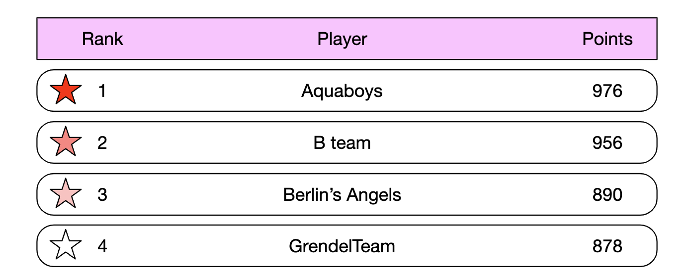
Step 1: Requirements aur scope
- Score: match jeeto → +1 point.
- Saare players leaderboard mein.
- Har mahine naya tournament = naya leaderboard.
- Top 10 dikhana + specific user ka rank; bonus: user ke 4 upar aur 4 neeche.
- 5M DAU, 25M MAU; har player ~10 matches/day.
- Same score = same rank (tie-breaking bonus).
- Real-time — batched history nahi chalega.
Back-of-the-envelope
- 5M DAU / 10^5 sec ≈ 50 users/sec avg; uneven distribution → peak ~250 users/sec. (Notes ek jagah "50mil DAU" likhte hain, lekin 50 users/sec ka math 5M DAU se hi aata hai.)
- Score updates: 50 × 10 = 500 QPS, peak 2,500 QPS.
- Top-10 fetch: ~1 baar/user/day → ~50 QPS.
Step 2: API aur high-level design
POST /v1/scores // { user_id, points } — SIRF game servers ke liye, clients nahi
GET /v1/scores // top 10
-> { "data": [ {"user_id":"user_id1","user_name":"alice","rank":1,"score":12543},
{"user_id":"user_id2","user_name":"bob","rank":2,"score":11500} ], ..., "total": 10 }
GET /v1/scores/{user_id}
-> { "user_info": { "user_id":"user5", "score":1000, "rank":6 } }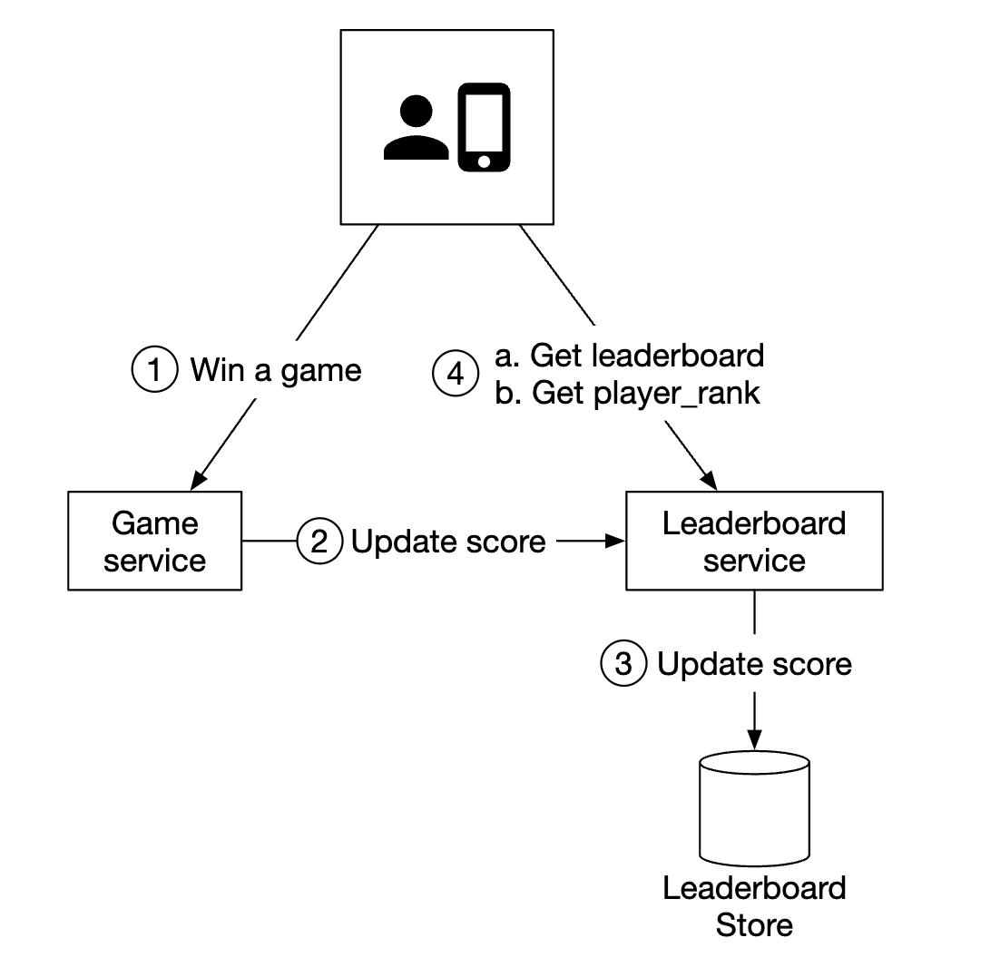
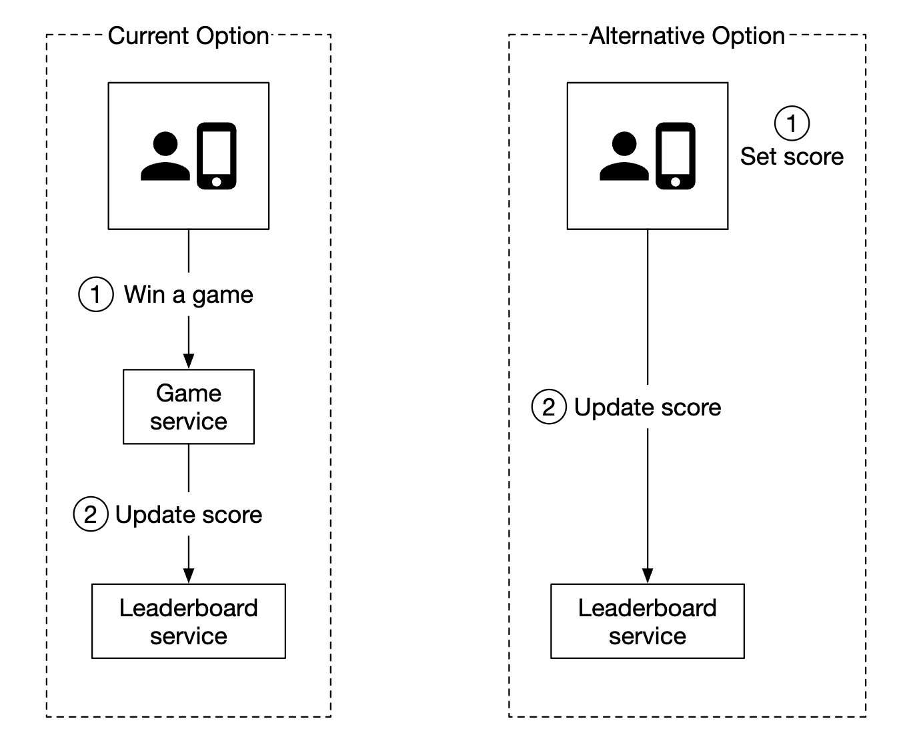
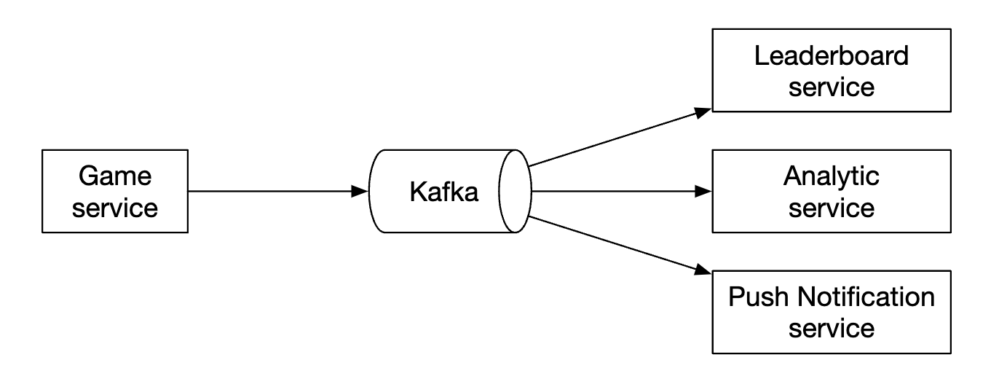
Data model option 1: Relational DB
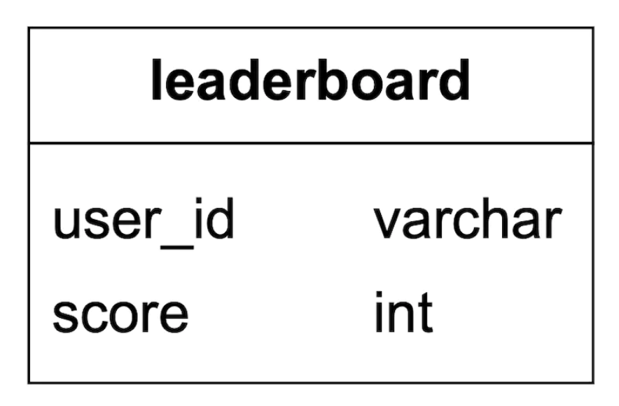
month column add karna zyada sensible hai).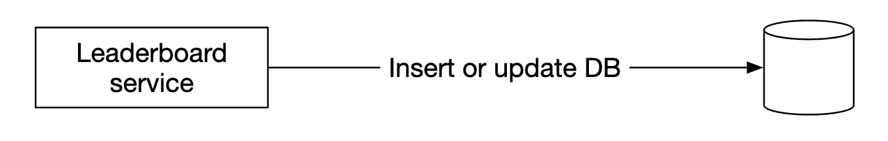
INSERT INTO leaderboard (user_id, score) VALUES ('mary1934', 1);
UPDATE leaderboard SET score = score + 1 WHERE user_id = 'mary1934';
-- (MySQL mein ek hi statement: INSERT ... ON DUPLICATE KEY UPDATE score = score + 1)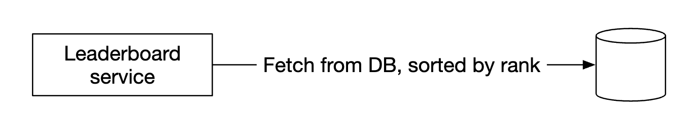
SELECT (@rownum := @rownum + 1) AS rank, user_id, score
FROM leaderboard ORDER BY score DESC; -- full table scan + sort
SELECT (@rownum := @rownum + 1) AS rank, user_id, score
FROM leaderboard ORDER BY score DESC LIMIT 10; -- index on score: top 10 fast
-- lekin kisi user ka rank:
SELECT *, (SELECT COUNT(*) FROM leaderboard lb2 WHERE lb2.score >= lb1.score) RANK
FROM leaderboard lb1 WHERE lb1.user_id = {:user_id}; -- O(N) count, millions pe slowTop 10 index se theek ho jaata hai, lekin rank of arbitrary user = O(N) count. Millions users + real-time = nahi chalega.
Step 2b: Redis sorted set
Sorted set = hash map (member → score) + skip list (score order mein members).
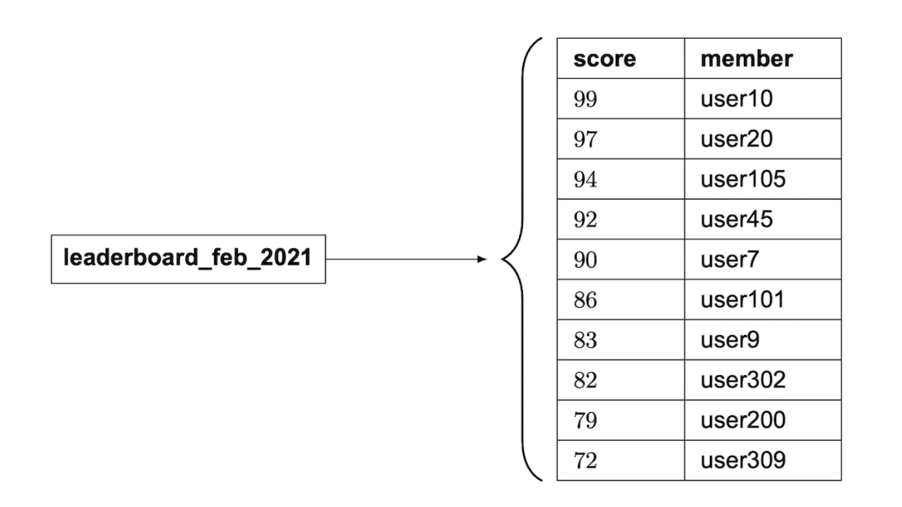
leaderboard_feb_2021 ek sorted set ko point karta hai: (99, user10), (97, user20), (94, user105) … (72, user309) — hamesha score se sorted. Insert/update pe order khud maintain hota hai.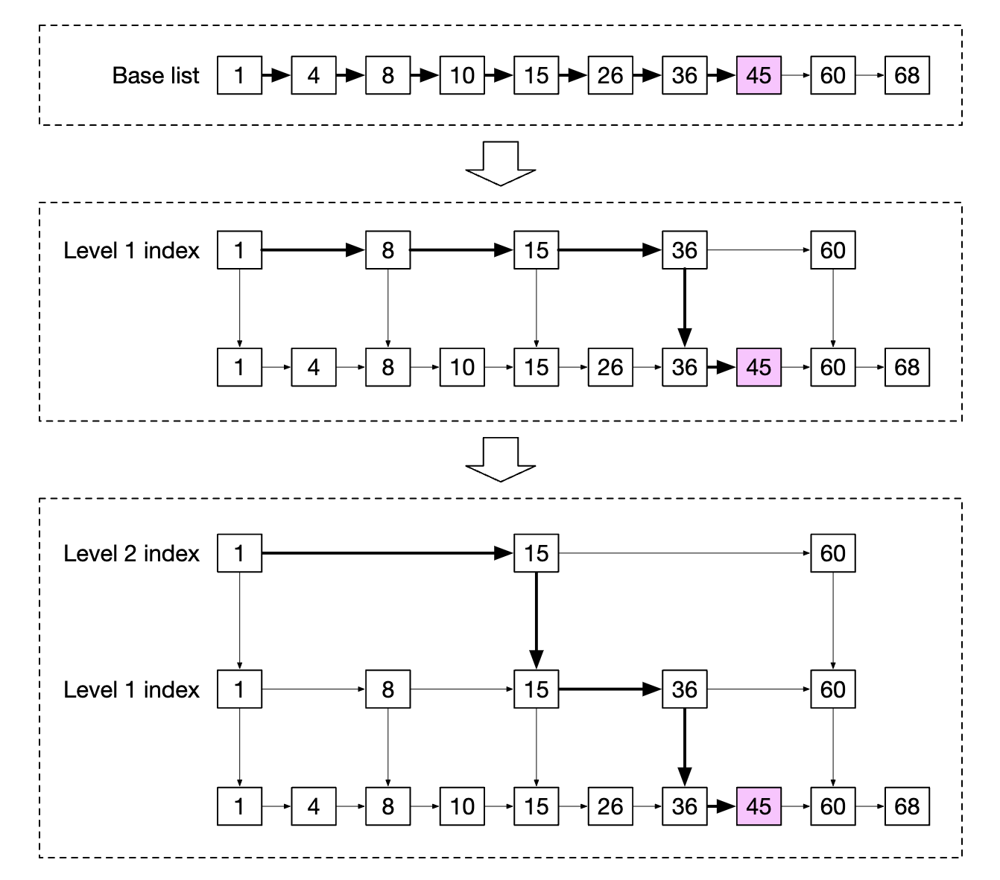
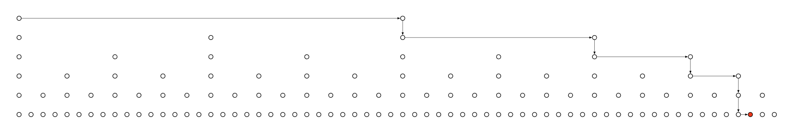
| Command | Kaam | Complexity |
|---|---|---|
ZADD | Insert ya score set | O(log N) |
ZINCRBY | Score increment (nahi hai to 0 se) | O(log N) |
ZRANGE / ZREVRANGE | Range by rank (asc/desc), offset + count | O(log N + M) |
ZRANK / ZREVRANK | User ka rank | O(log N) |
ZINCRBY leaderboard_feb_2021 1 'mary1934' # point scored
ZREVRANGE leaderboard_feb_2021 0 9 WITHSCORES # top 10
-> [(user2,score2),(user1,score1),(user5,score5)...]
ZREVRANK leaderboard_feb_2021 'mary1934' # my rank (0-based)
ZREVRANGE leaderboard_feb_2021 357 365 # 4 above + me + 4 below (rank 361 ke liye)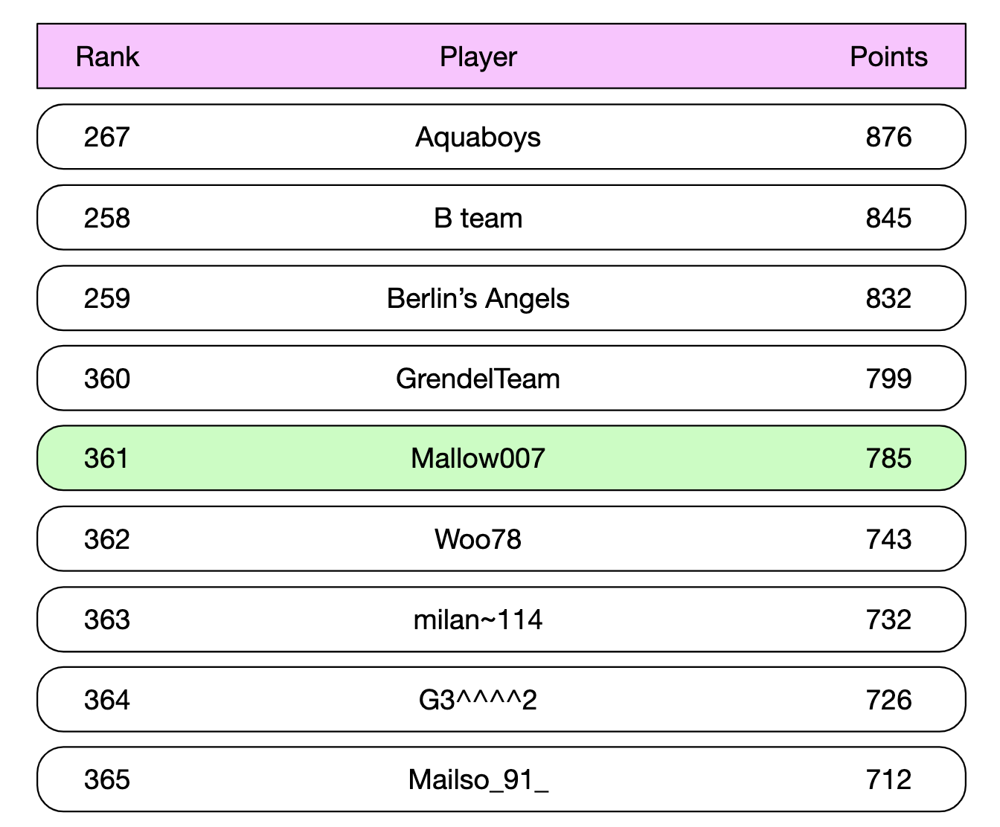
Sizing
- Worst case 25M MAU sab khelein: 24-char ID + 16-bit score ≈ 26 bytes × 25M ≈ 650 MB; skip list overhead se double bhi ho to ek Redis node mein aaram se.
- 2,500 updates/sec — single Redis ke liye kuch bhi nahi (single node lakh+ simple ops/sec karta hai).
- Redis replica + persistence (AOF/RDB) crash ke liye.
- MySQL mein do tables: user profile, aur point history (kab kaun jeeta) — Redis gaya to isse leaderboard rebuild.
- Top 10 users ki profile details cache karo.
Step 3a: Cloud provider ya khud manage?
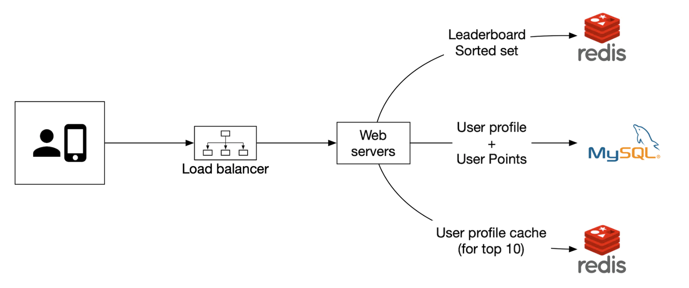
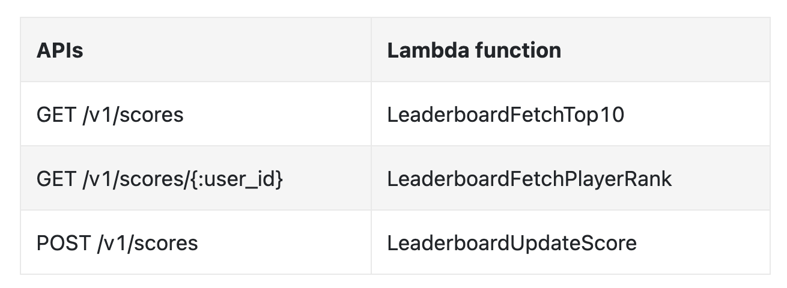
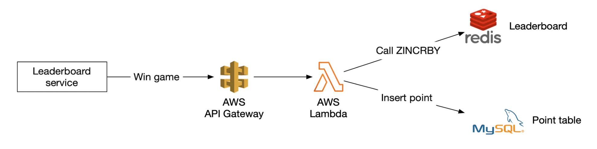
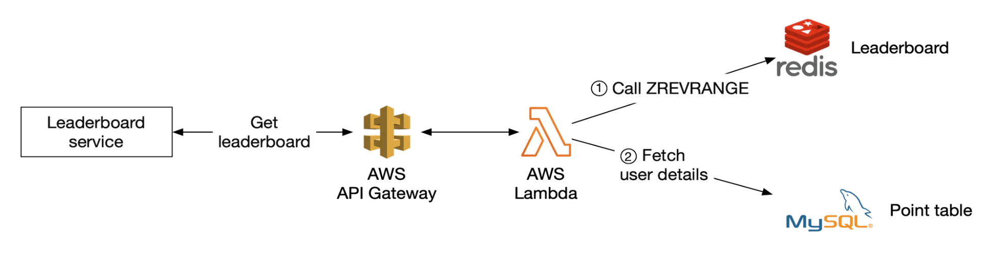
Lambda = serverless: provisioning/scaling khud hoti hai. Author: naya game ground-up bana rahe ho to yeh approach.
Step 3b: Redis scaling
5M DAU pe ek instance kaafi. 10× growth (500M DAU) → ~65 GB, 250k QPS → sharding.
Option A: Range (fixed) partitions by score
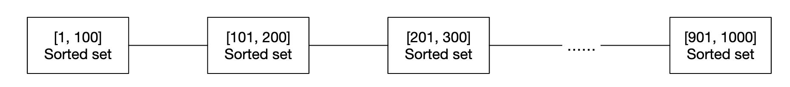
- Top 10: highest shard se.
- User rank = apne shard mein rank + upar ke saare shards ke counts (
ZCARD— O(1); notes "info keyspace" bolte hain). - Score badha aur range cross ki → user ko shard move karna padega (remove + add).
- Distribution uneven ho sakti hai — ranges data dekh ke tune karo.
Option B: Hash partitions (Redis Cluster)
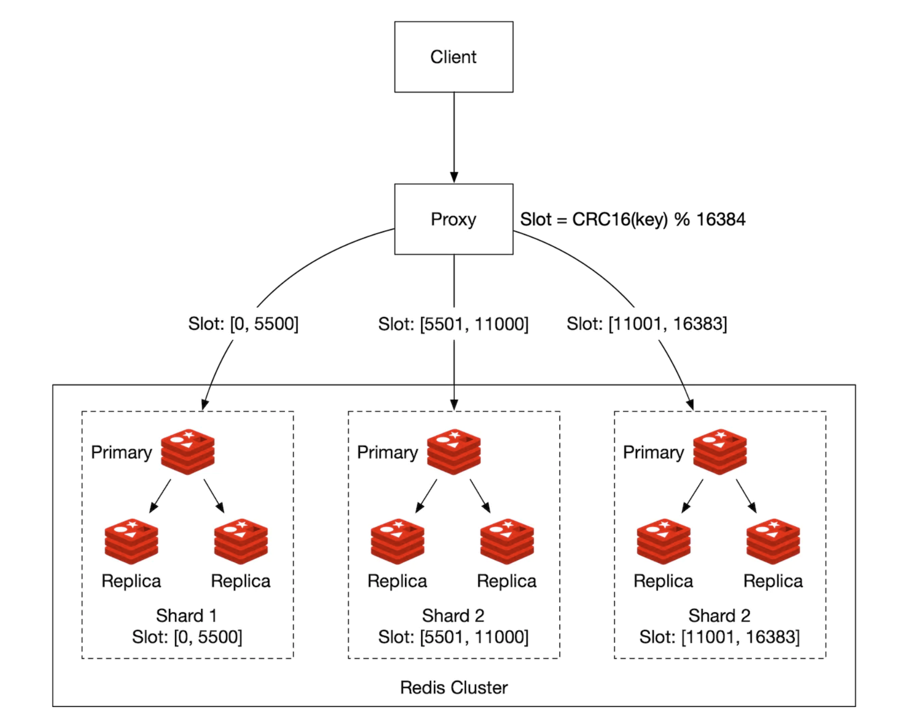
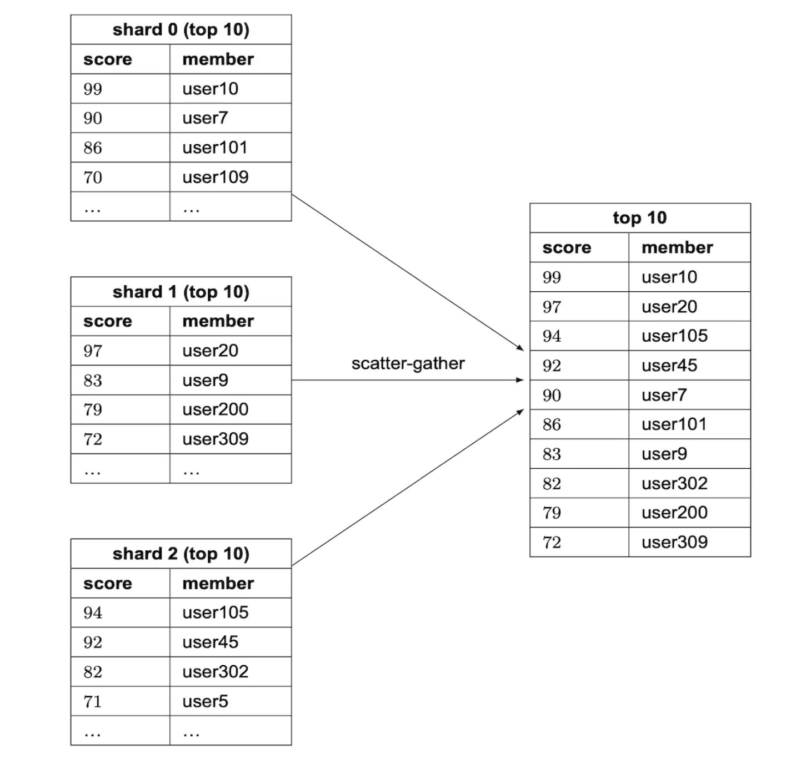
- Top K bada ho to sab shards se bahut data → latency.
- Partitions badhe → latency badhe.
- User rank nikaalne ka seedha tarika nahi.
Isliye author fixed (range) partitions prefer karte hain.
redis-benchmark se capacity data-driven decide karo. Aur Redis Cluster mein ek sorted set ek hi slot pe hota hai — ek bada key cluster ka fayda nahi uthata; sharding application-level karni padti hai.Step 3c: Alternative — NoSQL (DynamoDB)
Chahiye: heavy writes + partition ke andar score se sort. DynamoDB/Cassandra/MongoDB fit. Author DynamoDB lete hain (managed, GSI support).
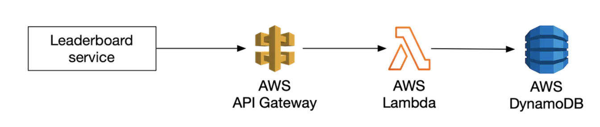
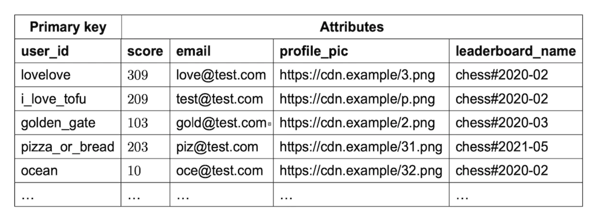
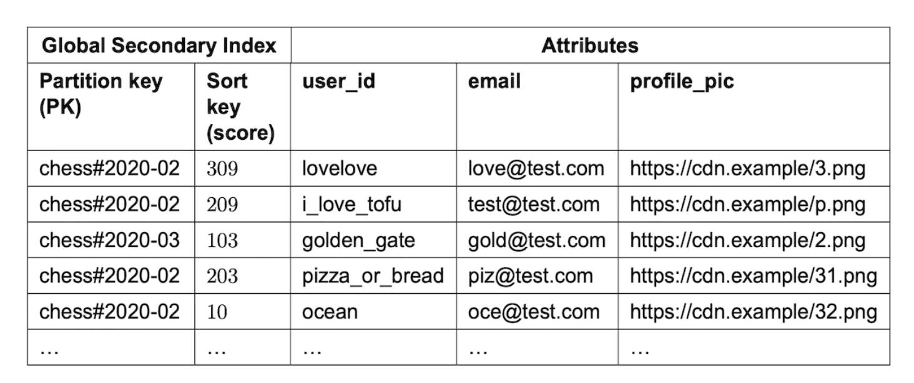
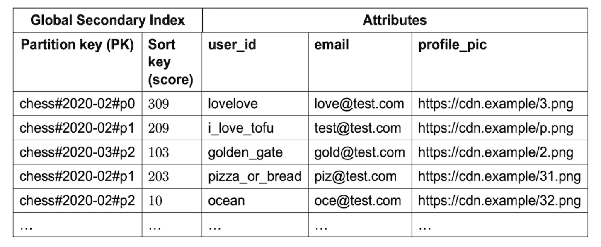
user_id % num_partitions suffix). Writes 3 partitions mein bikhar gaye; sort key score same.- Zyada partitions = better write scale, lekin reads ko sab partitions query karne padte hain.
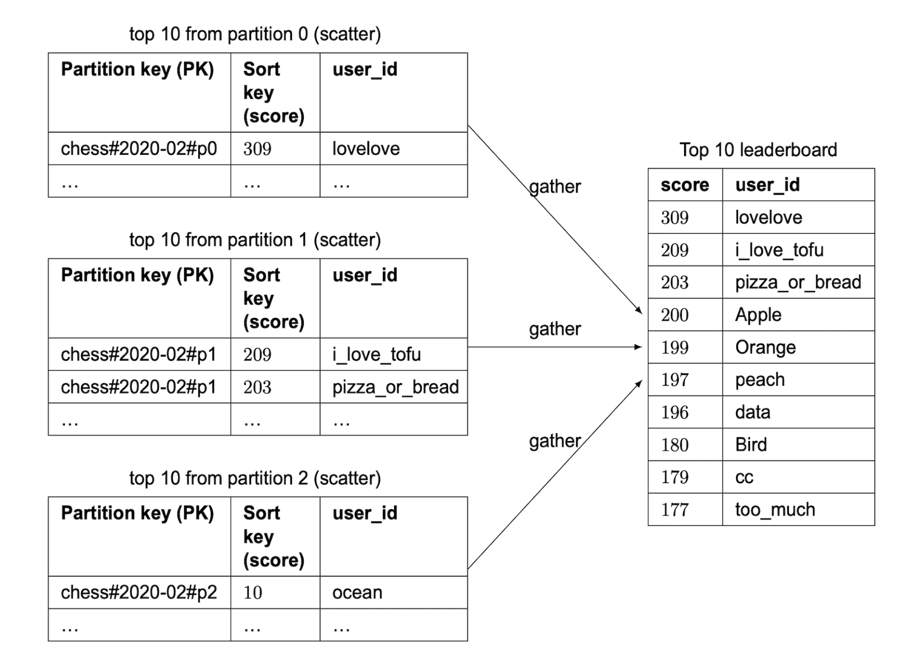
Partitions ka number benchmarking se. Bada downside: exact rank mushkil → bade scale pe percentile dikhao. Cron score distribution nikaale:
10th percentile = score < 100
20th percentile = score < 500
...
90th percentile = score < 6500Step 4: Wrap up
- Faster retrieval: user objects Redis hash mein (
user_id → user object). - Tie-breaking: same score pe pehle jisne score achieve kiya ya last played time.
- Failure recovery: bada Redis outage → MySQL WAL/point table se script se rebuild.
score * 10^10 + (MAX_TS - achievedAtEpochSec) (double ke 53-bit precision ke andar raho). Ab higher score pehle, aur same score mein jisne pehle achieve kiya woh upar.- Requirements + numbers (2,500 peak writes, 50 reads/s) — "scale chhota hai, problem rank query ki hai".
- Server-authoritative score update (security point).
- RDBMS try karo → rank query O(N) dikhao → Redis sorted set (skip list explain, commands with complexity).
- Sizing: 650 MB → single node; persistence + MySQL as source of truth.
- 10× scale: range vs hash sharding trade-off; DynamoDB write sharding + percentile.
- Bonus: ties, rebuild, monthly key rotation (
leaderboard_mar_2021, purane archive).
Follow-up questions
- Q: Duplicate score event (game server retry) se double point?
- Match ID pe idempotency: MySQL mein
UNIQUE(match_id, user_id); insert successful ho tabhi ZINCRBY. - Q: Friends-only leaderboard?
- Chhoti friend list ke liye on-demand: friends ke scores
ZMSCOREse laao aur app mein sort. - Q: Month end pe reset?
- Naya key per month; purana key snapshot karke archive storage mein, phir delete/expire.
- Q: Redis down ho gaya live tournament mein?
- Replica promote (Sentinel/Cluster failover); worst case MySQL points se rebuild; rebuild ke dauraan stale read ya "updating" banner.
Key Takeaways
- Score updates server-authoritative hon; client se kabhi direct nahi.
- RDBMS mein arbitrary rank O(N); Redis sorted set (hash + skip list) se O(log N).
- ZINCRBY, ZREVRANGE, ZREVRANK — teen commands mein poora leaderboard.
- 25M users ≈ 650 MB — single Redis; MySQL point history = source of truth / rebuild.
- Scale: range partition (rank easy) vs hash partition (scatter-gather, rank mushkil).
- NoSQL: write sharding + scatter-gather; exact rank ki jagah percentile.